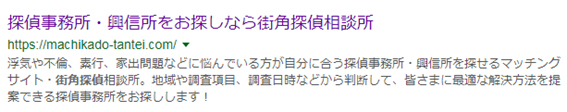
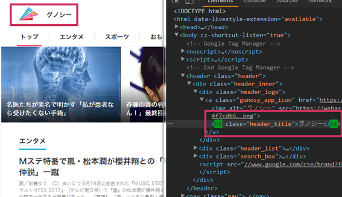
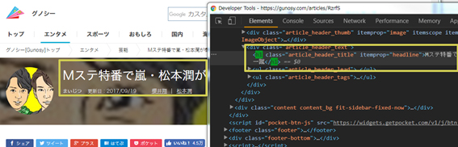

1. SEOとは
自社のHPを見つけやすくすることです。
検索結果で上位に上がるには、ユーザーにとって質の良いHPであることが大切です。
質の良いHPを表示するために、クローラー(サイトの情報収集専用ロボ)を使って、HPに関する情報を収集して日々チェックしています。
2015年4月21日以降Googleが発表したモバイルフレンドリー化後は、
スマホで検索した場合スマホ対応のサイトが上位にくるようになっています。
余談ですがこのクローラーは会員制サイトなどにも入り込んで情報収集をしています。
2. クローラーに評価してもらうために
URLパラメータを設定する
通常何も設定をしないと「https://」と「http://」、「www有り無し」それぞれにサイトが存在しています。
この同一内容のページが複数存在状態ではクローラーは低評価を付けるため、
URLを統一させる作業を行います。(301リダイレクト設定をします)
ページを統一することにより、評価が下がりにくくなります。
canonicalでURLを統一する
似た内容のページが複数存在するとクローラーは同一内容のページが複数存在すると低評価になるため、
Head内にcanonicalタグを指定し、クローラーに巡回させたいページURLを指定します。
<head>
<link rel="canonical" href="巡回させたいURL”>
</head>必要箇所にno index , no followタグの設置(詳細は4)
このタグをhead内に記述すると、検索結果から表示されなくなります。
インデックスされたくない、重複するページがある場合に設置するのが良いでしょう。
nofollowはmetaタグ以外にaタグにも指定できます。
<meta name=”robots” content=”noindex, nofollow”>クローラー用にサイトマップ(sitemap.xml)の準備をする(詳細は5)
クローラー用にsitemap.xmlでページのサイトマップを作ります。
同時にユーザー向けにサイトマップページを作りましょう。(内部リンクを増やす、リンク内にキーワードをはめ込む狙い)
内部リンクにキーワードを絡める
「TOPへ戻る」 → 「キーワード名 TOPへ戻る」のようにキーワードを絡めると、
被リンクとして外部リンクと同様の効果があります。
クローラーの巡回のしやすさを高める効果もあります。
URLは分かり易くする(詳細は5)
リンクをアンカーテキストとして利用する人もいるため、分かりやすいURL名だと、
URLを辿る前の時点でどんなページか認識しやすくなります。
その為コンテンツと関連性のあるURLにしましょう。
ただし、キーワードを過度に使わないようにしましょう。(xxx-cheesecake-xxx.html 等)
例：
何のページか分かりにくい
→http://xxx.com/contents01/page1.html/
メニュー内容のページだと分かりやすい
→http://xxx.com/menu/cheesecake/
3-1. キーワード
対策キーワード選び
2017年のGoogle検索順位別クリック率のデータが公表されています。
参考：https://www.internetmarketingninjas.com/blog/google/announcing-2017-click-rate-study/
1位は21.12%に対し10位は1.64%と約20%の差があります。
かなりの人数が検索結果ページを下の方までスクロールしないことが分かりますね…
なので対策キーワード選びは重要です。
HPでアピールしたいサービスの特徴を象徴するシンプルな単語にし、
その上でインターネット上にて見つけられやすいキーワードに直すといった、
「自社と市場とのすり合わせ」の作業が対策キーワード選びになります。
キーワード選びには「キーワードプランナー」を利用し、
月間検索数が多いワードほど検索時に引っかかりやすくなります。
例：
良い選び方 「渋谷 イタリアン」
改善点のある選び方 「渋谷 パスタ」
↑キーワードプランナーによる月間検索数では、「渋谷 イタリアン」が6,600、「渋谷 パスタ」が2,400と、
「渋谷 イタリアン」のほうが検索回数を上回っているためです。
ユーザーのニーズを理解する
キーワードの調査を行うと、ユーザーの隠れたニーズを知ることが出来ます。
例：
「加圧トレーニングのキーワードを調査していたら、
「加圧トレーニング 綺麗 痩せたい」という複合検索が多かった！」
↑筋トレ目的でサイトを打ち出すより、痩せる事・美容に良い事をメインに打ち出した方が良いと分かります。
キーワードのミスマッチを防ぐ
例えば「ケーキ」で検索する人と「ケーキ＋材料」＆「ケーキ＋地名」で検索する人の求めるものはそれぞれ違います。
「ケーキ」だけで検索する人はケーキのレシピや種類を調べたいかもしれませんが、
「ケーキ」という単語自体の意味を検索する人もいると考えられます。
ユーザーのニーズが違うので、自社サービス等でユーザーに提供できるものからキーワードを絞り込んでいくのが良いです。
主張や表現がブレる（複数存在する）と評価されない
同じ意味を持つ類似単語を複数使用しないようにしましょう。
最近では略語のような別の表記も同じ意味と解釈されるようになっています。
ですが、完全一致しているキーワードの方が良いので、キーワードプランナーを使用し、
検索回数が多いキーワードを優先的に使用しましょう。
NG
・ホームページ、HP、ウェブサイト 等の同じ意味を持つ類似キーワード
・高級、格安の正反対の意味を持つキーワードを2つ存在させること
追加する内容の軸になる
情報を継続配信するためのテーマ選びにも役立ちます。
多数検索されているキーワードから、そのキーワードに沿う新規ページの作成も行えるようになります。
すぐに効果が望めない場合
成果の出やすい出にくいものも存在するため、
ユーザー目線で情報提供をすることが大切です。
まとめ
・キーワード選びを適切に行う、ユーザーの求めるコンテンツを用意すれば自然とSEOの効果が上がる
・ユーザー目線と提できるきるものをマッチさせたキーワードを選ぶ
3-2. ロングテール対策
その中でもロングテール対策は、ミドルワードからスモールワードにかけて
検索頻度が低いが購入率の高い（売上に直結しやすい）キーワードで対策を行うことをロングテール対策と言います。
キーワードのカテゴリ：
①ビッグワード
②ミドルワード
③モールワード
① ビッグワード … 誰しもが共通して使う（連想する）ワード
特徴：抽象的
キーワードパターン：少ない
検索数：多い
SEO対策コスト：高い
例：海外旅行、探偵、興信所など
② ミドルワード … ビッグワードとスモールワードの間のワード
特徴：抽象的
キーワードパターン：少ない
検索数：多い
SEO対策コスト：高い
例：海外ツアー、ハワイ ホテル
② スモールワード … 個人のニーズや思考が反映されたワード
特徴：具体的
キーワードパターン：多い
検索数：少ない
SEO対策コスト：安い
例：海外ツアー ハワイ ダイビング、ハワイ ホテル アメニティ
1～3までのパターンは、ユーザーが情報収集のどの段階にいるのかによって使い分けられます。
検索に使用される全てのワードの内約60％がスモールワードであると言われており、
「※検索ワードのパーソナライズ化」に対応することが、ロングテール対策においては重要となります。
※パーソナライズ … 個々人の興味・関心・行動に合わせてサービスを最適化すること。
ロングテール対策の特徴
・検索数の少ない、複合キーワードで検索順位を上位表示にする
・不特定多数のキーワードで上位表示にする
シソーラス
シソーラスとは類語のことです。
ただし、前途記述した同じ意味を持つ類似単語を複数使用しないようにしなければならないと書きましたが、
最終的にはトラフィックの多い単語にフォーカスして統一していく方がベストなようです。
4. 最適なタグ設定
なるべくソースコードをシンプルに圧縮する
ページの表示が遅くなると低評価の対象になるので、長いコードは圧縮すると良いです。
主にjsやjQueryのプラグインが重たくなる要因です。
ページタイトルは<title>タグで指定
全ページ固有なタイトルにし被らないようにします。
全角30～35時程度が目安です。
ページタイトルの内容は検索結果に表示されます。
検索キーワードと一致していればタイトルに書かれたテキストが太字になるため、
ユーザーは関連の有るサイトとして把握しやすくなります。
TOPページにはサイト名や会社名を載せ、深い階層には各ページの内容に適したタイトルを付けるのが望ましいです。
<title>タグまとめ
・各ページにユニークなタイトル名をつける
・シンプルで説明的なタイトルを付ける
・titleに入れる文字数は全角30～35文字以内
<meta>タグでdescriptionを設定
metaタグは検索結果を表示した際に現れるページの説明文のことです。
Descriptionは全角で140時文字以下に収まるように表記します。
<meta name="description" content="140文字以内 ">
↑上記のように検索結果の時表示されます。画像のファイルサイズを軽くする
矢印やアイコン等共通で多用する画像はCSSスプライトで表示するのもありですね。
<img>タグを使用するより、表示速度が変わるようです。
<img>タグのalt属性を記載する
画像を使用している際、何らかのエラーで画像が表示されない時に画像だと認識させるための属性です。
Altテキストは画像の代替テキストになるよう入力しましょう。
その際、altテキストは長すぎず、単語ではなく文章体で入力しましょう。
画像ファイル名を画像の内容に合った名前にする
クローラーは画像のファイル名も認識するためです。
日本語ファイル名も認識するようです。
text-indent:-9999pxは使わない
画面外に飛ばす記述はスパムとみなされます。
また一部のデバイスではパフォーマンスが悪くなるようです。
テキストを飛ばす場合は素直に画像を使うか、
下記の方法でしたらテキストを飛ばすことが出来ます。
隠れる要素はブロックレベルである必要があります。
See the Pen テキストを飛ばして画像のみ表示 by Saki Tsukada (@__sk__) on CodePen.
<h>タグ（見出しタグ）
HTMLの構造に沿って記述します。
<h1>タグは1ページにつき1つ重要なワードを設定し、
<h1>タグ、次に<h1>タグに続く段落の要素を記述する。（キーワードを詰め込みすぎない）
<h1>タグにはキーワードを文頭に含有させます。
<h1> → <h2> → <h3> → <h4> → <h5> → <h6>の順番でソースを書くと良いでしょう。
Googleの推奨する適切な<h1>タグの付け方
1. ページの構成と関係なく見出しタグでテキストを囲わない
2. <em>や<strong>が適切な箇所で見出しタグを使用しない
3. 見出しタグのサイズの使い分けを不規則にしない
4. ページ内で見出しタグの乱用はしない
※h1タグに画像を使用するのは問題ありませんが、テキストの方がベターです。
画像にする場合はalt属性を記述するのを忘れないようにしましょう。
<h1>タグの適切な設置
<h1>ブログの記事タイトル</h1>
<h2>ブログの記事内で使用する中見出しタグ</h2>
<h3>～<h6>ブログの記事内で使用する小見出し適切でない設置
<h1>ブログのタイトル</h1>
<h2>ブログの記事タイトル</h2>
<h3>～<h6>ブログの本文中で使用するタグサイトのロゴにh1タグを設置しがちですが、特にブログやメディアサイトの場合は気をつけましょう。
<h1>タグの実装例：グノシー
TOPページ：
サイトのタイトルに<h1>タグを使用しています。

記事詳細ページ：
記事タイトルに<h1>タグを使用し、<h2>タグはメインコンテンツ内の人気記事のタイトルに、
サイドメニューの注目のキーワード等には<h3>タグが使用されています。

グノシーのようにTOPページと下層ページとでマークアップの仕方を変える方法もあります。
この場合はHTMLを2パターン分事前に書いておき、CSSやjQueryで表示非表示切り替えを行っています。
5. ナビゲーション
ディレクトリ構造を把握する
サイトのナビゲーションはユーザーが迅速に目的のコンテンツにたどり着けるようにするため重要です。
クローラーにも同様のことが言えます。
TOPを基準にディレクトリ構造も考えます。
ユーザーがどのページからより詳細な内容のページにたどり着くのか、導線を考える必要があります。
そしてコンテンツの整理をしましょう。コンテンツを適切に分類することにより、
ユーザーは求める情報へいち早くたどり着けることが出来ます。
あまりに深い階層だと評価に影響が出てしまうので注意です。
パンくずリスト
ページの構造が決まったら、サイトの上部にパンくずリストを設置しましょう。
この時、TOPへ戻るテキストリンクはなるべくキーワードを織り交ぜるとSEOに効果があります。
何よりユーザーの利便性も上がるので、分かりやすいサイトになります。
サイトマップ
Sitemap.xmlがクローラーがサイトのマップを読み込むためのコードです。
サイト内のURLを集める手掛かりとなるため、クローラがより情報収集しやすくなります。
HTMLで作られるサイトマップはユーザービリティの改善やSEO効果が見込めます。
ファイル名はxmlサイトはSitemap(頭だけ大文字)、HTML形式で作るサイトマップはsitemap（すべて小文字）です。
404エラーぺージ
作成しておくと、UXを高めてくれます。
ただしTOPとデザインが合わない場合は使わないようにしましょう。
そして<no index>タグを付けるなどし、クローラーが検索エンジンへ引っ張ってこないようにする必要があります。
6. コンテンツ
質の良いコンテンツページを増やすことによりユーザーによって外部リンクが貼られていき、
被リンク数が増える可能性が高くなります。
そうなるとGoogleから高評価を受けやすいので、
ユーザーのニーズとマッチしたコンテンツページを作成しましょう。
継続的に作成できるのが理想です。
サジェストを参考にし、多くの検索内容を想定しながらコンテンツを作成する（キーワードを織り交ぜる）と
検索順位に良い結果が反映されやすくなります。
コンテンツは2000文字～2500文字ほどの文章量があると良いでしょう。
7. PCサイトのモバイル対応
PCはPCサイト、SPはSPのサイトを表示するように区別します。
SPでPCサイトにアクセスした際は、SPサイトになるようリダイレクトを設定し、同じページへ飛ばしましょう。
PCサイトとSPサイトを区別することにより、モバイルフレンドリー化していると見なされ評価がより良くなるでしょう。
逆にPCでSPサイトにアクセスした際は、リダイレクトする必要は特にないですが、
フッター等の下部にPC版のサイト切り替えのリンクを貼ると親切だと思います。
8. 使えるSEO関連ツール
・キーワードプランナー
https://adwords.google.com/intl/ja_jp/home/tools/keyword-planner/
・Google Search Console（旧ウェブマスターツール）
https://www.google.com/webmasters/tools/home?hl=ja
・SEOチェキ
http://seocheki.net/